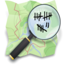

|  | OSM Count |
Apotheke (in Planung) Apotheke (Grafik)
Apotheke ist eine Wochenaufgabe "in Planung". Christoph (TheFive) nutzt diese Aufgabe, um OSM Count daran zu testen.
In diesem Tool werden für die Wochenaufgabe die Anzahl der Apotheken in OSM einer (hoffentlich plausiblen) Vorgabe gegenüber gestellt. Um die Entwicklung während der Wochenaufgabe im Detail zu verfolgen, werden die Apotheken täglich gezählt.
Die Anzahlen der Apotheken (Vorgabe) werden aus den ABDA (Bundesverband der Apothekenverbände) Werten (Daten) ermittelt. Dafür werden die ABDA Werte mit den Bevölkerungszahlen Werten gewichtet runtergebrochen (pro Bundesland). So gibt es hoffentlich eine plausible Vorgabe für die Wochenaufgabe (die theoretische Apothekenzahl).
Die Kooperation des ABDA in diesem Thema war leider "zurückhaltend."
[out:json];area["de:amtlicher_gemeindeschluessel"="######"]; (node(area)[amenity=pharmacy]; way(area)[amenity=pharmacy]; rel(area)[amenity=pharmacy]);out;
Die Anzahl der Ergebnisse ist die Anzahl der Apotheken, darüber hinaus wird das Fehlen oder Vorhandensein spezieller Tags (s.u.) geprüft.
Bei der Zählung werden nur die Gemeindeschlüssel genutzt, die nicht Teilstring (Beginn) eines anderen amtlichen Gemeindeschlüssels in OpenStreetMap sind. Die Zusammenfassung über verschiedene Gemeindeschlüssel geschieht dann auf den ermittelten Daten.
Um die Datenqualität zu messen, werden die Apotheken noch auf die folgenden Tags untersucht:
Diese Zahlen können als feste Anzahl oder als Prozentangabe in Abhängigkeit der Apothekenanzahl ausgegeben werden.
In der Diff Spalte werden entweder die Prozentanzahl der Apotheken im Vergleich zur theoretischen Apothekenzahl angegeben, oder aber die Differenz der letzten beiden dargestellten Spalten.
Öffnet man die Tabelle erstmalig, so wird die Anzahl der Apotheken für jedes Bundesland im Monatsverlauf dargestellt.
Den gewünschten Ort wählt man über die Link in der Schlüsselspalte der Tabelle. Gegebenenfalls muss man hier mehrfach klicken. In den Filtereinstellungen kann dann zügig auf "Bundesländer" zurückgestellt werden. In der zweiten Spalte der Filtereinstellungen kann man angeben, ob alle Apotheken gezählt werden sollen, oder ob nur Apotheken mit fehlenden Tags gezeigt werden sollen (Bei fixme existierendes Tag).
In der dritten Spalte wird zwischen Prozentanzeige und Anzahl gewählt. Die Prozentanzeige macht im Zusammenhang mit den fehlenden Tags Sinn, sie gibt an, wie viel Prozent der in OSM vorhandenen Apotheken ein Tag (nicht) haben.
Die Zeiteinstellung gibt den "Detailgrad" der Zeitachse an. OSM Count nimmt in einer Periode immer die aktuellste Messung
Der einfache "Zahl" Parameter gibt die Länge des in der Datenbank abgefragten Gemeindeschlüssels an. 2 bedeutet "Zeige die Bundesländer" und entsprechend grössere Werte zeigen eine höhere Detaillierung. Wählt man die Maximalstufe ohne den Ort eingeschränkt zu haben, so werden 11.000 Gemeindeschlüssel angezeigt, das kann dann schon mal ein wenig länger dauern.